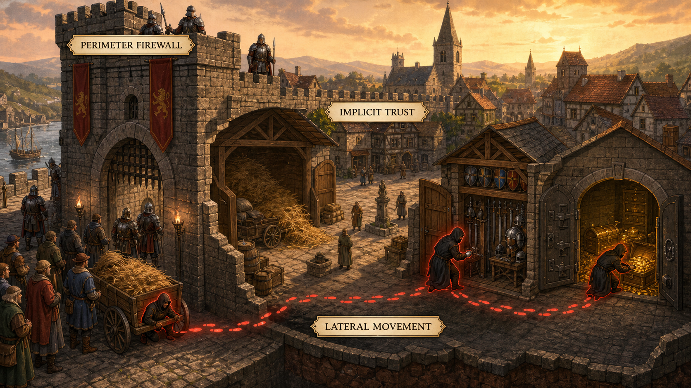
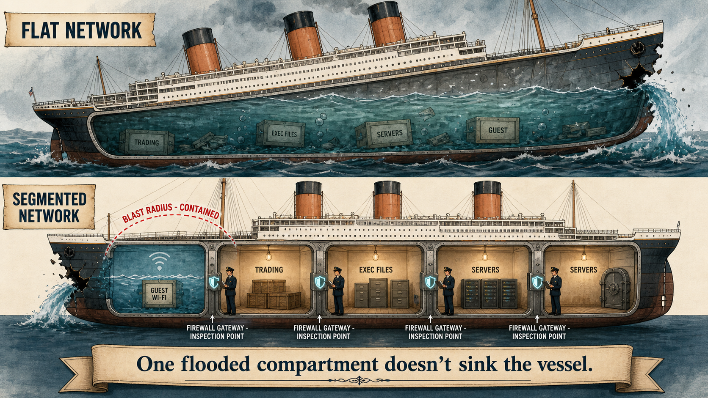
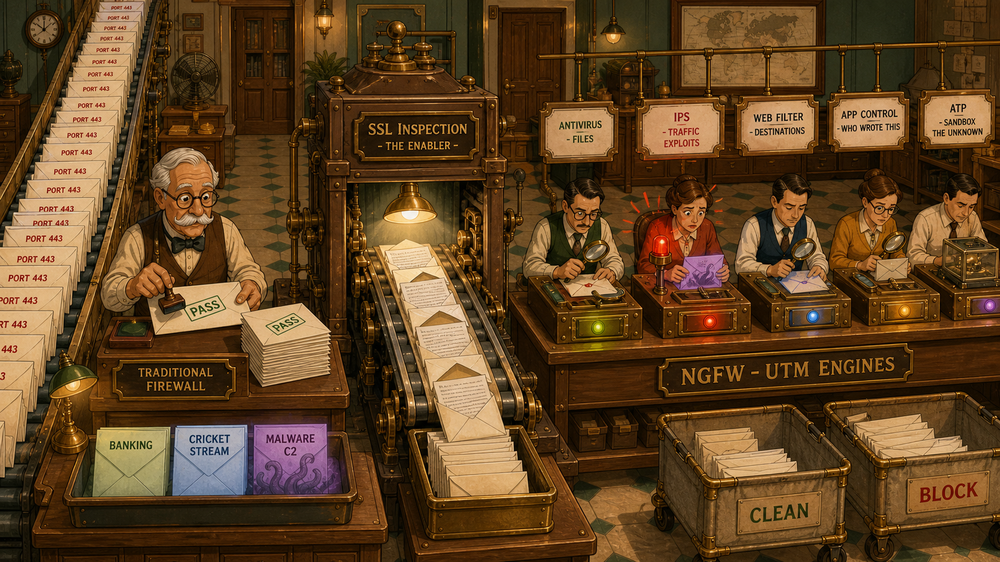
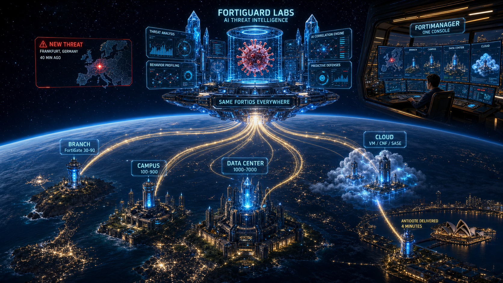

Session 1 was pure concepts — no topology, no CLI — so the strongest visual anchor is a chain of four vivid real-world analogies, each mapped precisely to its technical concept. Recall one image, recall the whole model.
How to use this page: study each scene's image and its mapping, then cover the page and narrate all four scenes from memory. Each scene answers one question: Why did the perimeter die? What is real segmentation? Why did ports become useless? Where does the firewall's knowledge come from?
SCENE 1 · IMPLICIT TRUST & LATERAL MOVEMENT
The Castle With One Gate
A magnificent gatehouse, ferociously guarded — and behind it, a town square where nobody checks anything. A spy who slipped in with a merchant cart wanders freely from the granary to the armoury to the treasury. The guards at the gate face outward; they will never see him again. That is the perimeter-only network: one inspection point, implicit trust behind it, lateral movement invisible.

images/session-01-scene1-castle.png
Image not found — drop the PNG at the path above.
The perimeter firewall as a medieval gatehouse — impenetrable at the front, oblivious behind.
Dramatic cutaway illustration of a medieval walled castle-town at golden hour, rendered in a rich storybook style with painterly lighting. On the left, an imposing stone gatehouse bristling with armoured guards inspecting a queue of merchants, portcullis half-raised, torches, banners, exaggerated security theatre. The wall itself is thick and impressive. But the cutaway reveals the interior: a completely open town square with an unguarded granary, armoury, and a gleaming treasury vault, doors ajar. A single hooded spy figure, subtly glowing red, has already slipped inside and is shown at three sequential positions connected by a dotted red footprint trail: emerging from a hay cart, picking the armoury lock, and finally reaching into the open treasury. Every guard faces outward, away from him. Small elegant label banners read "PERIMETER FIREWALL" on the gatehouse, "IMPLICIT TRUST" over the open square, and "LATERAL MOVEMENT" along the red footprint trail. Mood: ironic — maximum security exactly where the attacker isn't. Wide 16:9 composition, high detail, warm stone tones contrasting with the cold red trail.
Anchor: guards face outward; the spy is already inside. A firewall only inspects traffic that crosses it.
SCENE 2 · SEGMENTATION & BLAST RADIUS
The Ship With Watertight Bulkheads
Penny's favourite. Two hulls side by side: one open hull, fully flooded from a single breach — and one compartmentalised hull, where the same breach floods exactly one compartment while officers at each bulkhead door decide what may pass. The bulkhead doors are firewall gateways; the compartments are segments; the contained flood is the blast radius. If the gateway lives on a switch instead, the doors are painted on.

images/session-01-scene2-ship.png
Image not found — drop the PNG at the path above.
Flat network vs segmented network as two ship hulls — one sunk by a single breach, one saved by bulkheads.
Technical-illustration-meets-storybook split composition showing two cross-sectioned ocean liner hulls stacked vertically for comparison, cutaway naval-architecture style with crisp linework and watercolor washes. TOP HULL labeled "FLAT NETWORK": one enormous open cargo hold with no internal walls, a single jagged breach at the bow, and blue-green water flooding the ENTIRE length of the vessel; tiny crates labeled "TRADING", "EXEC FILES", "SERVERS", "GUEST" all submerged; the ship visibly listing, sinking. BOTTOM HULL labeled "SEGMENTED NETWORK": the identical ship divided into five watertight compartments by heavy steel bulkheads; the same bow breach floods ONLY the first compartment (labeled "GUEST WI-FI"), water stopped dead at the first bulkhead; at each bulkhead a small door manned by a uniformed officer with a clipboard and a glowing shield icon, labeled "FIREWALL GATEWAY — INSPECTION POINT"; remaining compartments dry, lit warm, crates safe, the compartment furthest aft labeled "SERVERS" with a small vault door. A red dashed arc over the flooded compartment reads "BLAST RADIUS — CONTAINED". Caption ribbon at bottom: "One flooded compartment doesn't sink the vessel." 16:9, high contrast between the drowned cool tones above and the safe warm tones below.
Anchor: bulkhead doors with officers = gateways on the firewall. No officer at the door = labels, not segmentation.
SCENE 3 · THE 443 PROBLEM, NGFW & UTM
The Sorting Office That Opens the Letters
A mail sorting office where every single envelope is identical — same size, same stamp, all marked "443." The old clerk sorts by envelope alone and passes everything. The next station is the NGFW: a team that opens each letter (SSL inspection) and hands the contents down a bench of five specialists — the file examiner (AV), the tamper detector (IPS), the address checker (web filter), the handwriting identifier (app control), and the quarantine lab for anything never seen before (ATP sandbox).

images/session-01-scene3-sorting-office.png
Image not found — drop the PNG at the path above.
Port filtering vs NGFW as a mail room: identical 443 envelopes, and the bench of five UTM specialists who read the letters.
Warm, detailed isometric illustration of a bustling vintage mail sorting office, Wes-Anderson-style symmetry and color palette, brass and oak fittings. LEFT: a conveyor delivering hundreds of PERFECTLY IDENTICAL cream envelopes, every one stamped "PORT 443" in red; an elderly bespectacled clerk labeled "TRADITIONAL FIREWALL" glances only at the envelope fronts and rubber-stamps "PASS" on all of them, a tall wobbling pile of approved identical mail beside him; three envelopes in the stack subtly glow — one green (labeled tiny "BANKING"), one blue ("CRICKET STREAM"), one sickly purple with faint tentacles peeking from the flap ("MALWARE C2") — he cannot tell them apart. CENTER: a dramatic brass letter-opening machine labeled "SSL INSPECTION — THE ENABLER" unsealing each envelope under a bright lamp. RIGHT: a long workbench labeled "NGFW — UTM ENGINES" with five distinct specialist stations in a row, each with a small hanging sign: (1) a scientist with a microscope examining a document for hidden ink, sign "ANTIVIRUS — FILES"; (2) a guard with a magnifier tracing tampered seams on the paper, sign "IPS — TRAFFIC EXPLOITS"; (3) a librarian checking the destination address against a big red ledger, sign "WEB FILTER — DESTINATIONS"; (4) a graphologist comparing handwriting samples on a corkboard, sign "APP CONTROL — WHO WROTE THIS"; (5) a sealed glass isolation chamber where an unknown letter is detonated safely with a tiny contained purple explosion, sign "ATP — SANDBOX THE UNKNOWN". The purple malware letter is being caught at station 2 with an alarm lamp flashing. 16:9, rich detail, storybook charm.
Anchor: identical envelopes = everything on 443. The opener is SSL inspection; the five bench specialists are the UTM engines. NGFW = the old clerk's desk plus the whole bench — a superset, never a replacement.
SCENE 4 · FORTIGUARD & THE UNIFIED SOLUTION
The Planetary Immune System
A night-side globe. In Frankfurt, a new pathogen is caught and analysed in a glowing central laboratory in the sky — FortiGuard Labs. Within minutes, threads of light carry the antidote to sentinel towers of every size across the planet: small branch outposts, mid-size campus towers, massive data-centre citadels, and translucent towers floating in clouds. Every tower runs the same machinery (FortiOS) and every one is conducted from a single control room (FortiManager).

images/session-01-scene4-immune-system.png
Image not found — drop the PNG at the path above.
FortiGuard Labs as a planetary immune system: one lab, one OS, one console, thousands of sentinels updated in minutes.
Breathtaking sci-fi illustration of Earth from high orbit at night, dark blue space, city lights glittering. Floating above the planet, a luminous crystalline laboratory station labeled "FORTIGUARD LABS — AI THREAT INTELLIGENCE", with visible holographic screens analysing a spiky red virus specimen inside a containment field; a small red flare on the map of Germany labeled "NEW THREAT — FRANKFURT, 40 MIN AGO". From the laboratory, dozens of elegant golden light-threads stream down to the planet's surface, each terminating at a watchtower: tiny lighthouse-sized towers on remote coastlines labeled "BRANCH · FortiGate 30-90", medium fortress towers in city clusters labeled "CAMPUS · 100-900", colossal citadel towers at major hubs labeled "DATA CENTER · 1000-7000", and ghostly translucent towers hovering inside stylised clouds labeled "CLOUD · VM / CNF / SASE". Every tower, regardless of size, has an identical glowing blue core visible through its walls, labeled once: "SAME FORTIOS EVERYWHERE". In the corner, a single warm-lit control room window in Sydney with one engineer at a wraparound console, screens mirroring every tower on the planet, labeled "FORTIMANAGER — ONE CONSOLE". A golden thread is arriving at the Sydney tower with a tiny caption "ANTIDOTE DELIVERED — 4 MINUTES". Epic scale, 16:9, bioluminescent blues and golds.
Anchor: the lab is the intelligence; the towers are just muscle. Cut the golden thread — expired licence, unreachable FortiGuard — and every tower fights with last month's antidotes. Config ≠ protection.
CLOSED-BOOK RECALL — NARRATE ALL FOUR
Castle: why does the spy roam free, and what network flaw is that?
Ship: what makes a bulkhead real rather than painted on?
Sorting office: name all five bench specialists and the machine that unseals the mail.
Immune system: what are the three "ones" — and what happens when the golden thread is cut?